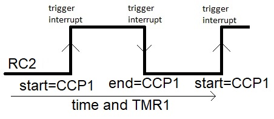
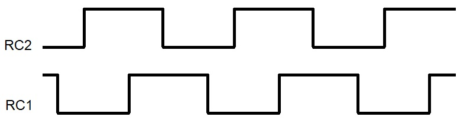

| Lecture: | 16 |
| Objective: | Build an ISR that measure pulse durations.
|
Interrupts
Capture Interrupt Exercise
Given:
An encoder connected to RC2 generates logic 1 pulses
between 5 ms and 30ms in duration. You need to know the duration of
these pulses (in terms of timer counts). Unfortunately, your processor
already has a lot of other things it is doing so the decision was made
to use an interrupt service routine to measure the length of the
pulses and store the most recent pulse duration in a global variable
pulseDuration. In addition, in order
to let main know when a new pulse has been measured by the ISR, the
ISR will set the global variable
newPulseDuration to 1.
Solution
Let's start by taking a broad view of the problem and our approach
to finding a solution. The figure below shows a pulse on RC2
and some of the actions that we need to take.

Since we are interested in the value of TMR1 at both the beginning
and ending of the pulse, we need to configure the capture subsystem to
detect both the rising and falling edges of the pulse. Unfortunatly,
we cannot do this with a single setting, so will have to switch
between detecting positive edges at the start of the pulse with
CCP1CONbits.CCP2M = 0b0101;
and detecting negative edges at the end of the pulse with
CCP1CONbits.CCP2M = 0b0100;
When the edge occurs two things wil loccur; the current TMR1 will
be store in CCP1 and the edge will cause the PIR1bits.CCP1F flag to
be set. When interrupts are enabled, setting CCP1F will cause the
ISR to run.
Since the ISR can be called on either the rising and falling edges of
RC1, the ISR should test the value of RC2 to determine if
it had been called on a rising or falling edge. If the ISR reads
RC2 as a logic 1, then the ISR was activated by a positive
edge. Note that the ISR does require a small but finite amount of
time to be called and to start running. This is more than enough
time for RC2 to stabalize to logic 1 by the time that we read
its value inside the ISR.
On the positive edge we should store CCP1 as the start time of the
pulse. There are two other things that need to be done, the first
is to configure the capture module to look for a negative edge by
setting
CCP1CONbits.CCP2M = 0b0100;
and clearing the CCP1IF flag. After doing these two things,
so the ISR should exit. Note that we want to store the start
timer count until the next ISR invocation on the falling edge of
the pulse, so we need to store the start time in the ISR as
a static variable.
On the negative edge of the pulse, the ISR will read a logic 0
on RC2 (because the ISR takes a small amount of time to start
running the code). The difference between CCP1 and the start time
represents the pulse duration and the ISR should write a new value
to this global variable. In addition, the ISR should set the new
pulse duration flag so that main knows that the ISR has computed
a new value. Main is welcome to later clear this flag if it wants
to be alerted to any new subsequent pulse duration values.
Now, let's follow the outline presented in an earlier lecture to develop
our solution. In order to use interrupts in your programs you will
need the following 6 components somewhere in your program.
- Configure hardware to operate as needed
- Configure hardware to generate
an interrupt signal
We can handle the first two tasks inside the
initPIC() function.
There are three pieces of hardware that need configured:
- RC2 pin (make it an input),
- TMR1 (1:8 prescaler, enable interrupts),
- the capture subsystem (positive edge capture).
- Enable perhipheral and global interrupts.
The following code performs all these configurations.
void initPIC(void) {
TRISCbits.RC2 = 1; // Make pin RC2 an input
CCP1CONbits.CCP1M = 0b0101; // Enable the capture channel 1 on rising edge
CCPTMRS0bits.C1TSEL = 0b00; // Associate TMR1 with CCP1
T1CONbits.T1CKPS = 0b11; // 1:8 prescale
T1CONbits.TMR1ON = 1; // Turn on timer 1
PIR1bits.CCP1IF = 0; // Clear the CCP1 flag
PIE1bits.CCP1IE = 1; // Enable CCP1 interupts
INCONbits.PIE = 1; // Enable perhipheral interrupts
INCONbits.GIE = 1; // Enable global interrupts
} // end init
In order to have the ISR communicate with main regarding the pulse
length, we need to define some global variables.
//*****************************************************************
//*****************************************************************
uint16_t pulseDuration; // Define the global variable
uint8_t newPulseDuration = 0; // define the flag that denotes a new pulse
void main(void) {
initPIC(); // Don't forget to configure the PIC
for(;;) {
<Do important stuff here>
} // end infinite loop
} // end main
- Associate interrupt vector with ISR
- Define actions for the ISR
- Clear the flag that called the ISR
//*****************************************************************
//*****************************************************************
void high_priority interrupt pulse_isr(void) {
static uint16_t start, end;
if (PORTCbits.RC2 == 0) { // Negative edge => End of pulse
end = CCP1; // grab the negative edge time
pulseDuration = end - start; // update the global variable
newPulseDuration = true; // Let main we got a new value
CCP1CONbits.CCP1M = 0b0100; // Enable the capture channel 1 on rising edge
} else { // Positive edge => Start of pulse
start = CCP1;
CCP1CONbits.CCP1M = 0b0101; // Enable the capture channel 1 on falling edge
}
PIR1bits.CCP1IF = 0; // Clear the CCP1 flag
} // end pulse_isr
Test your understanding
You can find the solutions embedded in the "source code" for this
web page by right mouse clicking on this web page and selecting
"view source". The solutions are in HTML comments.
- Two pulse trains are coming into RC2 and RC1. These pulse
trains have the same frequency, but different phases. Your task is to
determine which phase is leading and to determine the number of timer
counts between the leading positive to the trailing positive edge.
Since main is busy with other things, this work is to be done in an
ISR. Store the phase difference in a global variable phaseDuration.
Store the leading channel in a global variable called leadingPhase.
The waveforms have a period of 10 ms. Since the waveforms have a
period of 10 ms, the minimum time from the positive edge of one
channel to the other is at most 5 ms. The following diagram
illustrates.
